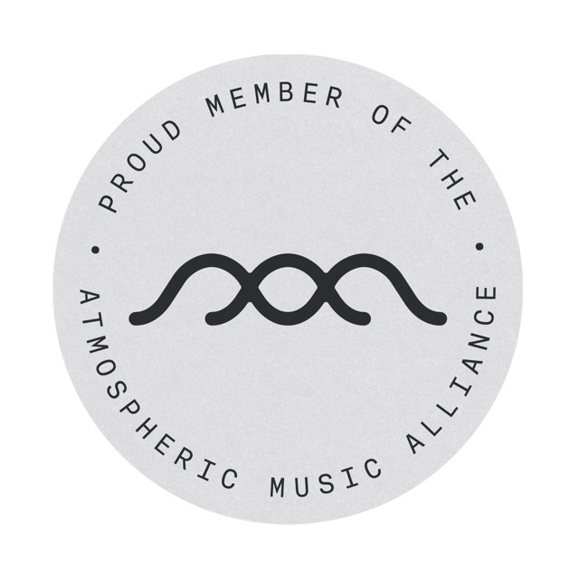
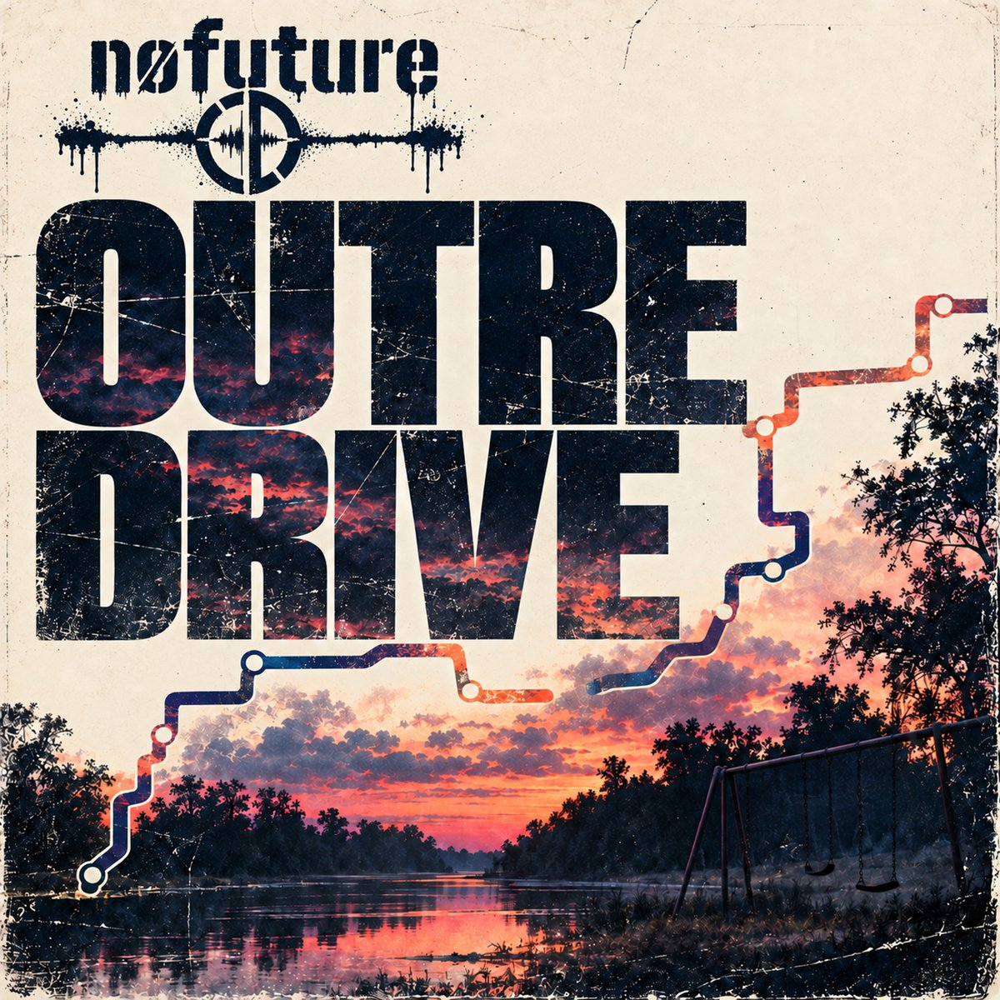

Visit the Atmospheric Music Alliance website
Hines Park Transmissions
nøfuture · Sound & vision · Michigan
Submitted November 16, 2026 · Awaiting decision
Artist biography
Jennifer A. Paull, working as nøfuture, composes sound & vision. Based in Michigan, she combines live improvisation, experimental composition, field recording, bass guitar, vocals and moving images to explore the emotional pull of place. Her performance history includes MUTEK Montréal, Movement Detroit, Detroit Film Theatre, the University of Michigan’s Duderstadt Center, MOCAD, Cranbrook Art Museum’s Andy Warhol: Grand Slam, and the Max M. Fisher Music Center. She also performed as part of the trio nospectacle. Her ongoing project, Hines Park Transmissions, transforms encounters with the woods, waterways, and roads of Hines Park into compositions of layered textures, low frequencies, and emerging rhythms. Released through Loudest Riot Sounds, the series connects music, photography, and moving images with DRIFT, her interactive map for outdoor exploration. Drawing on psychogeography and the Situationists’ practice of the dérive, DRIFT invites participants to follow curiosity through a landscape, listening and noticing how their surroundings shape mood, memory, and perception. Paull was also a founding member of Public Pool, the now-defunct Hamtramck art space, where she curated exhibitions and performances.

How I would use the AMA Artist Grant
I would use the AMA Artist Grant to build a compact modular synthesizer for composition and live improvisation as nøfuture. Funding would support a powered case, essential modules for sound generation, modulation, filtering, and output, plus patch cables. I would prioritize a small, complete instrument that I can learn deeply and expand over time. This builds on my longstanding interest in hands-on synthesis. I purchased a custom Triwave Picogenerator from 4ms, formerly 3ms, and used it in live performance as early as 2009. A modular system would extend that experience, giving me more ways to develop melody, harmony, texture, and rhythm through patching and physical interaction. I would use the instrument to create new work for Hines Park Transmissions, my ongoing sound & vision project rooted in Hines Park, Michigan. Combining synthesis with field recordings, I would explore the interplay between the park’s natural sounds and the movement of everyday life. Evolving rhythms, resonant tones, and melodic patterns would weave through recordings of water, wind, birds, and passing traffic. These explorations would become material for new releases and live performances, accompanied by photography and moving images. The project connects with DRIFT, my interactive map for outdoor exploration informed by psychogeography and the Situationists’ practice of the dérive. Modular synthesis offers a related approach to discovery: following an unexpected sound or interaction as I might follow an unfamiliar path.\n\nThe grant would provide a lasting, playable instrument, connecting my earlier experiments with the next stage of my composing and performance practice.
Sound & vision


Hines Park Transmissions connects field recording, sound composition, photography and moving images to the landscape of Hines Park. DRIFT extends the project into interactive outdoor exploration.
Live with the Triwave Picogenerator
UFO Factory · Detroit · 2009

Performing live with a custom Triwave Picogenerator made by 3MS Pedals, now known as 4ms Company. This earlier hands-on exploration of electronic sound connects directly to the modular synthesizer proposed in the grant.